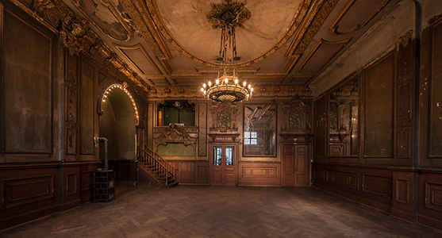
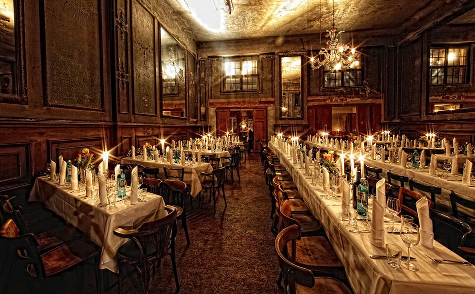
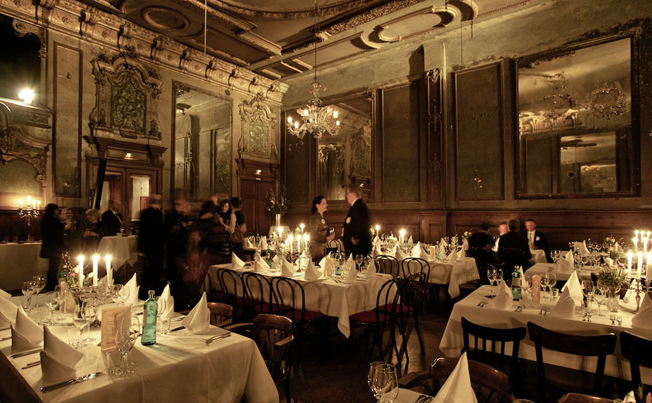

4th ACM Conference on Information-Centric Networking (ICN 2017), Sep. 26-28, 2017
Venue
ACM ICN 2017 takes place at Freie Universität Berlin, Germany. FU Berlin is located in the south of Berlin Even located in the quiet area of Berlin, FU Berlin is perfectly connected via public transport to all major touristic attractions in Berlin, which might be an option before or after the conference. Some attractions are even in walking distance, such as the Botanical Garden or the Ethnological Museum.

We will meet at the Institute of Computer Science, which is part of the Dahlem Campus. Dahlem has the reputation of an idyllic and quiet area. Several smaller parks and green areas are in walking distance, which will provide an inspiring atmosphere for ACM ICN 2017.


Getting to Conference Venue
Venue address:
Freie Universität Berlin
Computer Science
Takustr. 9
14195 Berlin, Germany
Note that the CS building is not directly visible from access roads. You can download the offline CS campus map. ACM ICN is located in building 9.
{kind=link}
Details will follow.
Social Events
Welcome Reception, September 26
Details will follow.
Banquet, September 27
The banquet of ACM ICN 2017 will take at a historic place, the Spiegelsaal (mirrored ballroom) of Clärchens Ballhaus. The event is located in the east city center of Berlin.

 
The building opened its doors for the public on September 13th, 1913. There are a veritable host of stories around this place. It is mentioned in the famous novel Berlin Alexanderplatz by Alfred Döblin. The German illustrator and photographer Heinrich Zille had his regular place at the bar, where he used to sit and draw. Otto Dix painted the poster for the place (1931), which is still used today.
After WWII, the mirrored ballroom remained closed. It was reopened in January 2005. All interior was left largely untouched.
Venue address:
Spiegelsaal, Clärchens Ballhaus
Auguststrasse 24
10117 Berlin | Germany
More details will follow.